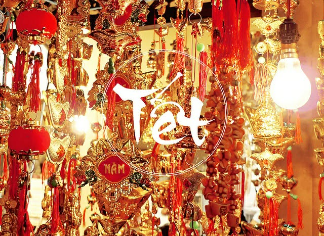
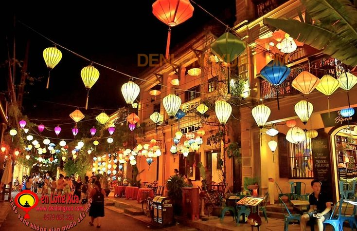

Áo Dài Việt Nam
Áo dài là biểu tượng của sự thanh lịch, duyên dáng và là nét đẹp truyền thống tiêu biểu của người Việt.

Tết Cổ Truyền
Tết là dịp sum họp gia đình, tưởng nhớ tổ tiên và chào đón năm mới với nhiều phong tục đẹp.

Đèn Lồng Hội An
Đèn lồng Hội An tạo nên vẻ đẹp lung linh, cổ kính và là nét văn hoá rất đặc trưng của phố cổ.